N-D Test Functions P¶
N-D Test Functions P¶Parsopoulos test objective function.
This class defines the Parsopoulos global optimization problem. This is a multimodal minimization problem defined as follows:
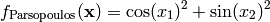
Here,  represents the number of dimensions and
represents the number of dimensions and ![x_i \in [-5, 5]](_images/math/b7a53fa3c9c2f313c2a86c222fdfbbeaf4b5a3ed.png) for
for  .
.
Two-dimensional Parsopoulos function
Global optimum: This function has infinite number of global minima in R2, at points 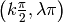, where 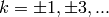 and 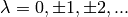
In the given domain problem, function has 12 global minima all equal to zero.
Pathological test objective function.
This class defines the Pathological global optimization problem. This is a multimodal minimization problem defined as follows:
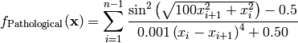
Here, represents the number of dimensions and ![x_i \in [-100, 100]](_images/math/33bdb423b6ec61d9668e76b556c95c96b2bb72ef.png) for .
for .
Two-dimensional Pathological function
Global optimum: 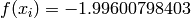 for  for
for
Paviani test objective function.
This class defines the Paviani global optimization problem. This is a multimodal minimization problem defined as follows:
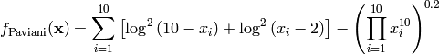
Here, represents the number of dimensions and 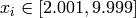 for  .
.
Global optimum: 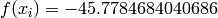 for 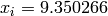 for
Penalty 1 test objective function.
This class defines the Penalty 1 global optimization problem. This is a multimodal minimization problem defined as follows:
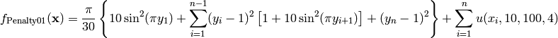
Where, in this exercise:
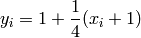
And:
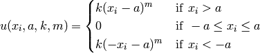
Here, represents the number of dimensions and ![x_i \in [-50, 50]](_images/math/9479281c91e8220b33050faa5474b724a60cf1ea.png) for .
for .
Two-dimensional Penalty 1 function
Global optimum:  for
for  for
for
Penalty 2 test objective function.
This class defines the Penalty 2 global optimization problem. This is a multimodal minimization problem defined as follows:
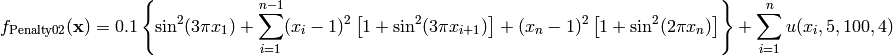
Where, in this exercise:
Here, represents the number of dimensions and for .
Two-dimensional Penalty 2 function
Global optimum: for  for
for
PenHolder test objective function.
This class defines the PenHolder global optimization problem. This is a multimodal minimization problem defined as follows:
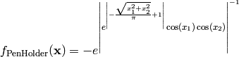
Here, represents the number of dimensions and ![x_i \in [-11, 11]](_images/math/64a0f2c8fc7fe30ca047d2d61f93c549fc261011.png) for .
for .
Two-dimensional PenHolder function
Global optimum: 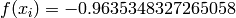 for 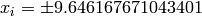 for
PermFunction 1 test objective function.
This class defines the Perm Function 1 global optimization problem. This is a multimodal minimization problem defined as follows:
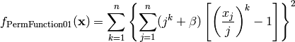
Here, represents the number of dimensions and 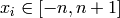 for .
Two-dimensional PermFunction 1 function
Global optimum: for 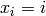 for
PermFunction 2 test objective function.
This class defines the Perm Function 2 global optimization problem. This is a multimodal minimization problem defined as follows:
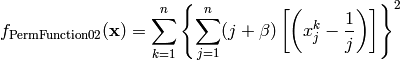
Here, represents the number of dimensions and for .

Two-dimensional PermFunction 2 function
Global optimum: for  for
for
Pinter test objective function.
This class defines the Pinter global optimization problem. This is a multimodal minimization problem defined as follows:
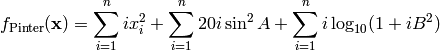
Where, in this exercise:
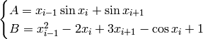
Where 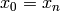 and 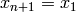.
Here, represents the number of dimensions and ![x_i \in [-10, 10]](_images/math/d511ca3206c16bae3e3af3c02835f3fe9fb07286.png) for .
for .
Two-dimensional Pinter function
Global optimum: for for
Plateau test objective function.
This class defines the Plateau global optimization problem. This is a multimodal minimization problem defined as follows:
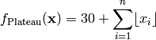
Here, represents the number of dimensions and ![x_i \in [-5.12, 5.12]](_images/math/670fd074f4bb495bf2a1d327d769de738121e329.png) for .
for .
Two-dimensional Plateau function
Global optimum: 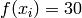 for for
Powell test objective function.
This class defines the Powell global optimization problem. This is a multimodal minimization problem defined as follows:
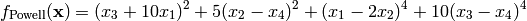
Here, represents the number of dimensions and 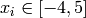 for  .
.
Global optimum: for for
Power sum test objective function.
This class defines the Power Sum global optimization problem. This is a multimodal minimization problem defined as follows:
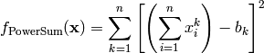
Where, in this exercise, ![\mathbf{b} = [8, 18, 44, 114]](_images/math/60aa4fd2d6f185448a71c22abdde0bce511e1128.png)
Here, represents the number of dimensions and 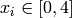 for .
Global optimum: for 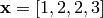
Price 1 test objective function.
This class defines the Price 1 global optimization problem. This is a multimodal minimization problem defined as follows:
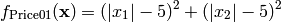
Here, represents the number of dimensions and ![x_i \in [-500, 500]](_images/math/286a33626f115cb9d7e75a098b287cf93b7916e5.png) for .
for .
Two-dimensional Price 1 function
Global optimum:  for 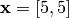 or 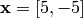
or 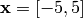 or 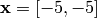
for 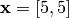 or 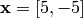
or 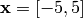 or 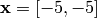
Price 2 test objective function.
This class defines the Price 2 global optimization problem. This is a multimodal minimization problem defined as follows:
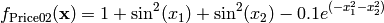
Here, represents the number of dimensions and for .

Two-dimensional Price 2 function
Global optimum: 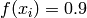 for for
Price 3 test objective function.
This class defines the Price 3 global optimization problem. This is a multimodal minimization problem defined as follows:
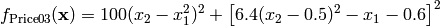
Here, represents the number of dimensions and for .
Two-dimensional Price 3 function
Global optimum: for , ,
,
Price 4 test objective function.
This class defines the Price 4 global optimization problem. This is a multimodal minimization problem defined as follows:
Here, represents the number of dimensions and for .
Two-dimensional Price 4 function
Global optimum: for ![\mathbf{x} = [0, 0]](_images/math/ae446016118c18b04012af8feda9cc5e2e1808a6.png) , and
, and